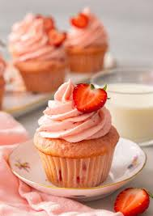

Here are some cupcake recipes to make your day sparkle!✨
Cupcakes are more than just tiny cakes—they're little bundles of joy, packed with flavor and creativity!
Whether you love classic vanilla, rich chocolate, or adventurous flavors like matcha and salted caramel,
there’s a cupcake for every craving.
From elegant weddings to cozy birthdays, cupcakes make every occasion sweeter.
Plus, they’re perfect for sharing—or keeping all to yourself!
With endless decoration possibilities, from swirls of buttercream to sprinkles and edible glitter, each cupcake is a mini masterpiece.
Explore our collection of recipes, baking tips, and decoration ideas to bring your cupcake
dreams to life. Because life is too short for boring desserts!! Happy baking! ü療ú®
Chocolate Cupcakes
Rich, moist, and topped with silky chocolate frosting, these cupcakes are a chocolate lover’s dream.
Ingredients:
- 1 cup all-purpose flour
- 1/2 cup cocoa powder
- 1 tsp baking soda
- 1/4 tsp salt
- 1/2 cup butter, melted
- 1 cup sugar
- 2 eggs
- 1 tsp vanilla extract
- 1/2 cup buttermilk
Instructions:
- Preheat oven to 350°F (175°C). Line a muffin tin with cupcake liners.
- Whisk flour, cocoa powder, baking soda, and salt in a bowl.
- In another bowl, beat butter and sugar, then add eggs and vanilla.
- Gradually mix in dry ingredients, alternating with buttermilk.
- Fill liners 2/3 full and bake for 18-20 minutes.
- Cool completely before frosting.
Vanilla Cupcakes
Fluffy and light, these vanilla cupcakes are the perfect canvas for any frosting.
Ingredients:
- 1 1/2 cups all-purpose flour
- 1 1/2 tsp baking powder
- 1/4 tsp salt
- 1/2 cup butter, softened
- 3/4 cup sugar
- 2 eggs
- 1 tsp vanilla extract
- 1/2 cup milk
Instructions:
- Preheat oven to 350°F (175°C) and line a muffin tin with cupcake liners.
- Whisk flour, baking powder, and salt together.
- Beat butter and sugar until fluffy, then mix in eggs and vanilla.
- Gradually add dry ingredients, alternating with milk.
- Fill liners 2/3 full and bake for 18-20 minutes.
- Cool before frosting.
Strawberry Cupcakes
These fruity cupcakes are packed with fresh strawberry flavor and a touch of sweetness.
Ingredients:
- 1 1/4 cups all-purpose flour
- 1 tsp baking powder
- 1/4 tsp salt
- 1/2 cup butter, softened
- 3/4 cup sugar
- 2 eggs
- 1/2 cup pureed fresh strawberries
- 1/2 tsp vanilla extract
Instructions:
- Preheat oven to 350°F (175°C) and line a muffin tin with cupcake liners.
- Whisk flour, baking powder, and salt together.
- Beat butter and sugar until fluffy, then add eggs and vanilla.
- Mix in pureed strawberries.
- Gradually add dry ingredients and mix until combined.
- Fill liners 2/3 full and bake for 18-20 minutes.
- Cool before frosting.
